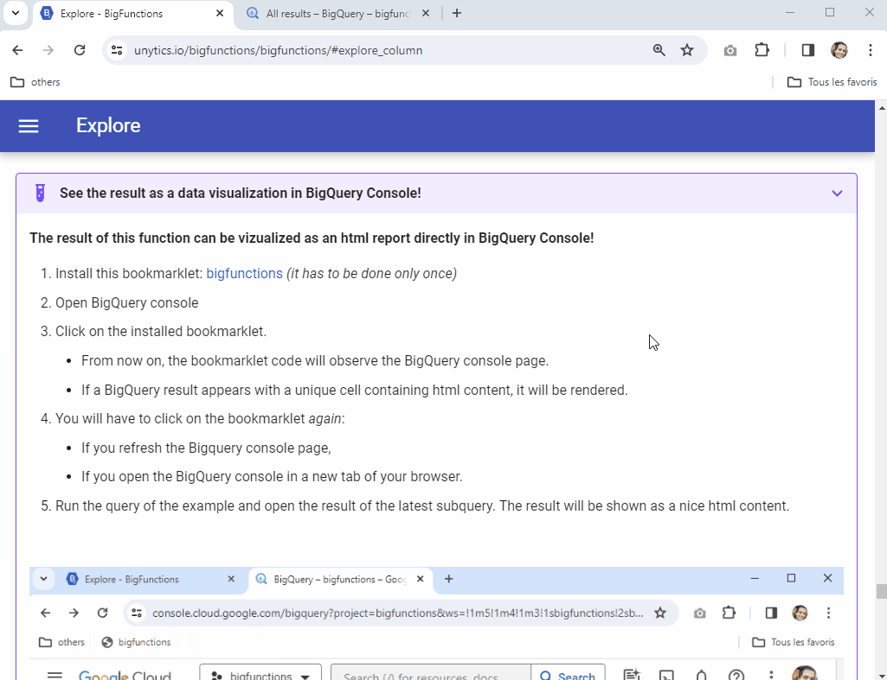

bigfunctions > sankey_chart
sankey_chart¶
Call or Deploy sankey_chart ?
Call sankey_chart directly
The easiest way to use bigfunctions
sankey_chartfunction is deployed in 39 public datasets for all of the 39 BigQuery regions.- It can be called by anyone. Just copy / paste examples below in your BigQuery console. It just works!
- (You need to use the dataset in the same region as your datasets otherwise you may have a function not found error)
Public BigFunctions Datasets
| Region | Dataset |
|---|---|
eu |
bigfunctions.eu |
us |
bigfunctions.us |
europe-west1 |
bigfunctions.europe_west1 |
asia-east1 |
bigfunctions.asia_east1 |
| ... | ... |
Deploy sankey_chart in your project
Why deploy?
- You may prefer to deploy
sankey_chartin your own project to build and manage your own catalog of functions. - This is particularly useful if you want to create private functions (for example calling your internal APIs).
- Get started by reading the framework page
Deployment
sankey_chart function can be deployed with:
pip install bigfunctions
bigfun get sankey_chart
bigfun deploy sankey_chart
Description¶
Signature
sankey_chart(data)
Description
Return html with a Sankey Google chart
See the result as a data visualization in BigQuery Console!
The result of this function can be vizualized as an html report directly in BigQuery Console!
- Install this bookmarklet: bigfunctions (it has to be done only once)
- Open BigQuery console
- Click on the installed bookmarklet.
- From now on, the bookmarklet code will observe the BigQuery console page.
- If a BigQuery result appears with a unique cell containing html content, it will be rendered.
- You will have to click on the bookmarklet again:
- If you refresh the Bigquery console page,
- If you open the BigQuery console in a new tab of your browser.
- Run the query of the example and open the result of the latest subquery. The result will be shown as a nice html content.

Examples¶
select bigfunctions.eu.sankey_chart([('event1', 'event2', 12), ('event1', 'event3', 12)])
select bigfunctions.us.sankey_chart([('event1', 'event2', 12), ('event1', 'event3', 12)])
select bigfunctions.europe_west1.sankey_chart([('event1', 'event2', 12), ('event1', 'event3', 12)])
Need help or Found a bug using sankey_chart?
Get help using sankey_chart
The community can help! Engage the conversation on Slack
We also provide professional suppport.
Report a bug about sankey_chart
If the function does not work as expected, please
- report a bug so that it can be improved.
- or open the discussion with the community on Slack.
We also provide professional suppport.
Use cases¶
The sankey_chart function is best used when you want to visualize the flow of something between different stages or categories within BigQuery. Here are some use cases:
-
E-commerce Customer Journey: Track how users move through different stages of a purchase funnel (e.g., product view, add to cart, checkout, purchase). The thickness of the flow lines in the Sankey diagram would represent the number of users transitioning between each stage, highlighting bottlenecks or drop-off points. The input data would consist of tuples representing the source stage, destination stage, and the number of users making that transition.
-
Sales Lead Tracking: Visualize the progression of leads through your sales pipeline (e.g., lead generation, qualification, proposal, negotiation, closed won/lost). This helps identify stages with low conversion rates and optimize the sales process. The input data would be similar to the e-commerce example, with tuples representing the sales stage transitions and the number of leads.
-
Website User Flow: Analyze how users navigate through your website, from the landing page to various sections and ultimately to a desired action (e.g., signup, purchase). This allows you to identify popular paths, areas of friction, and optimize website design for better user experience. The input data would represent transitions between website pages and the number of users navigating between them.
-
Supply Chain Management: Track the flow of goods and materials through different stages of your supply chain. This helps visualize dependencies, identify potential disruptions, and optimize logistics. Input data would represent movement of goods between locations or stages of production and the quantity of goods.
-
Financial Transactions: Visualize the flow of money between different accounts or entities. This can be used for fraud detection, financial analysis, or understanding complex financial networks. Input tuples would represent transfers between accounts and the amount transferred.
In each of these scenarios, the sankey_chart function takes the structured data from your BigQuery tables and generates an interactive HTML visualization that makes it easy to understand and analyze the flow patterns. The visualization can then be embedded in reports, dashboards, or presentations.
Spread the word!¶
BigFunctions is fully open-source. Help make it a success by spreading the word!